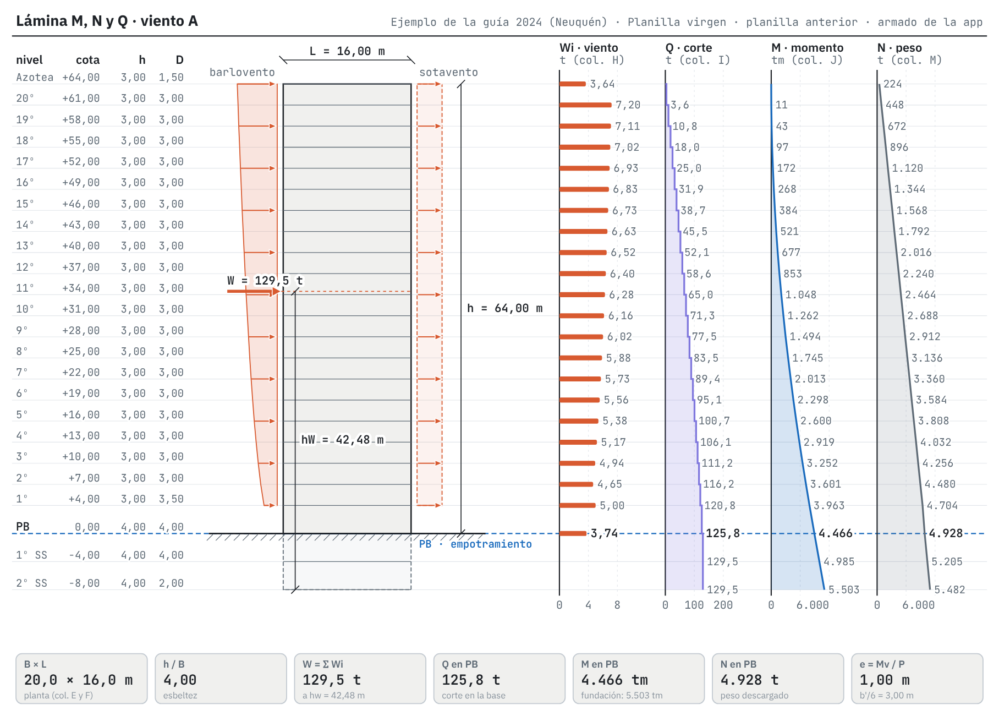
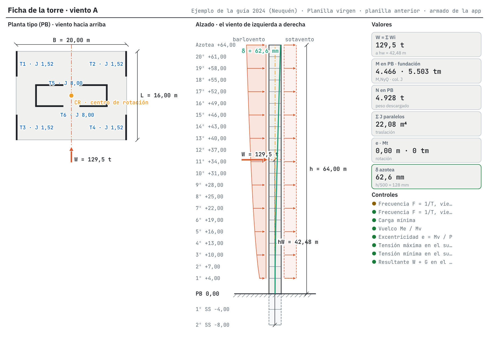
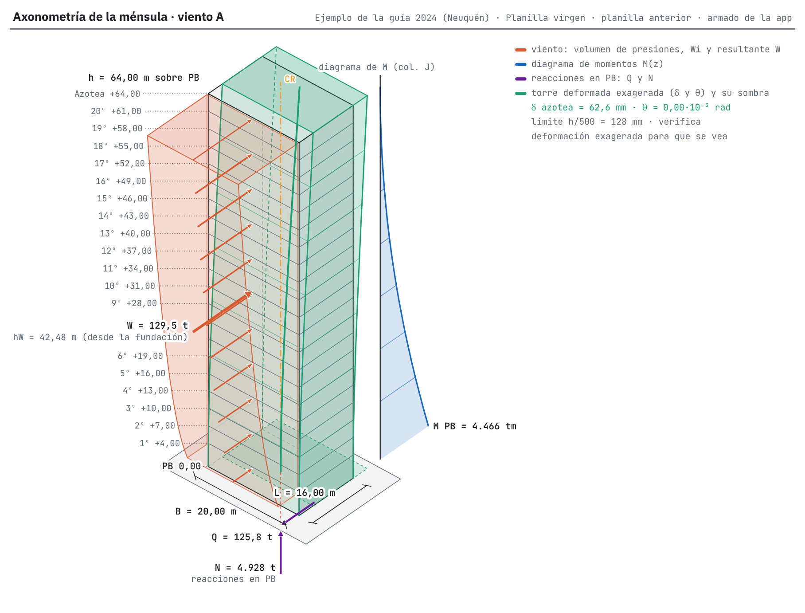
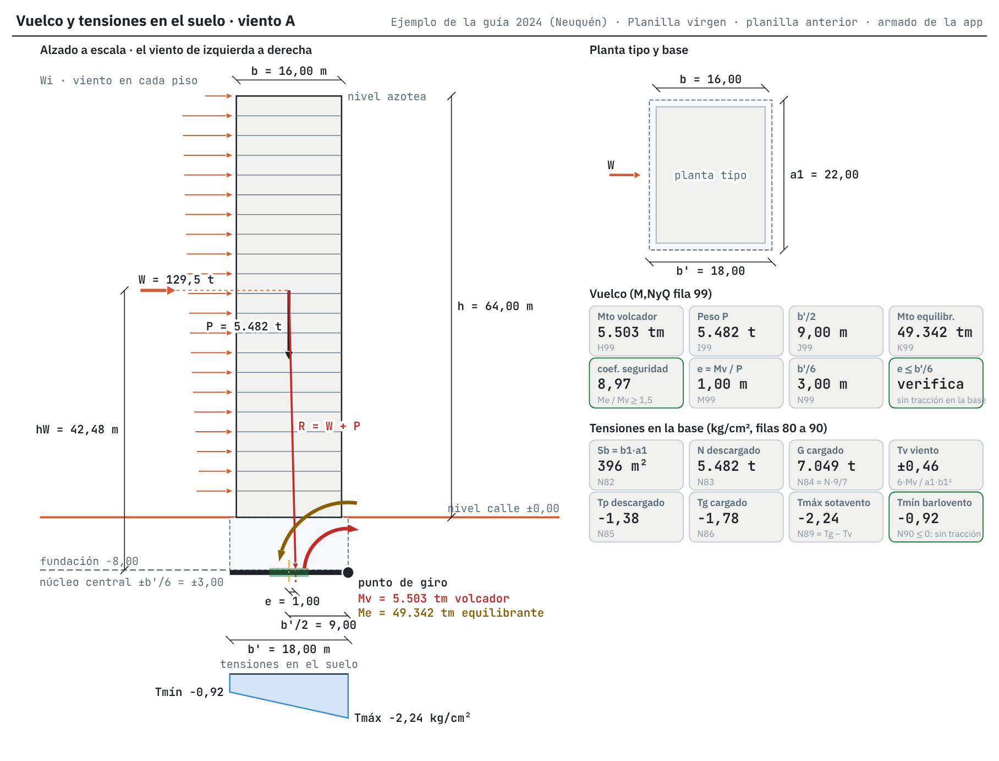

Qué muestra cada carta de la etapa «Carta», dónde aparece hoy y cuál conviene como principal. Capturas con el ejemplo de la guía 2024 (Neuquén), viento A.
La app dibuja la hoja «M,NyQ» de cuatro maneras (las cartas A, B, C y D). Las cuatro siguen existiendo; la decisión es cuál es la principal: la que se abre primero en la etapa «Carta», la que va en la portada del informe y de la Carta PDF, y la que representa la torre en la lámina de entrega. Hoy cada salida usa un orden distinto, porque la elección quedó abierta:
| Dónde | Qué carta usa hoy |
|---|---|
| Etapa «Carta» (al abrir) | A |
| Carta PDF (Exportar ▾) | C, A, D y B, en ese orden |
| Informe imprimible | B en la portada; después A, D y C |
| Lámina de entrega A3 | B y D arriba, A abajo |
| Desglose (PDF y PowerPoint) | A y D |
Las opciones son una de las cuatro, o una combinación (por ejemplo, una de portada y otra como lámina técnica).
El alzado de la torre y, a la misma altura, el viento de cada piso (Wi), el corte (Q), el momento (M) y el peso (N), con la tabla de niveles de la hoja y siete recuadros con los totales.

La planta con las piezas, su J y el centro de rotación; el alzado con la resultante W en hW y la deformada; los valores principales y la lista de controles.

La torre en el espacio como una ménsula: el viento como volumen de presiones con su resultante, la torre deformada (exagerada) con su sombra, el diagrama de momentos al costado y las reacciones en PB.

El esquema de abajo de las tablas de «M,NyQ», a escala: el viento de cada piso, W en hW, el peso P, la resultante, el punto de giro, el núcleo central b′/6 y las tensiones en el suelo, con las dos tablas de la hoja (vuelco y tensiones en la base).

Al armar este documento encontré un error de colores en esta carta: la flecha del momento volcador (Mv) y la resultante R = W + P están en rojo, que en toda la app es solo para la tracción. Hay que pasarlas a los colores de las cargas.
Una combinación: C de portada y A como lámina principal.
Si la cátedra prefiere que la entrega se parezca lo más posible a la planilla, la alternativa es A sola como principal, con C y D detrás.
Cuando elijas, ordeno las salidas para que todas usen el mismo orden (etapa «Carta», informe, Carta PDF y lámina A3).